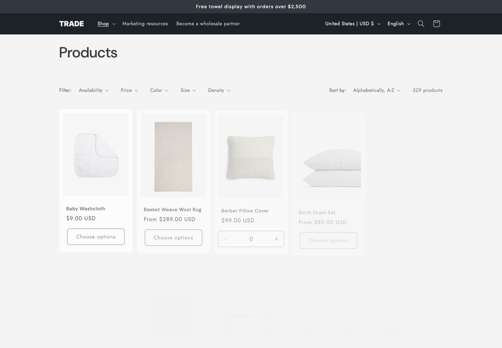
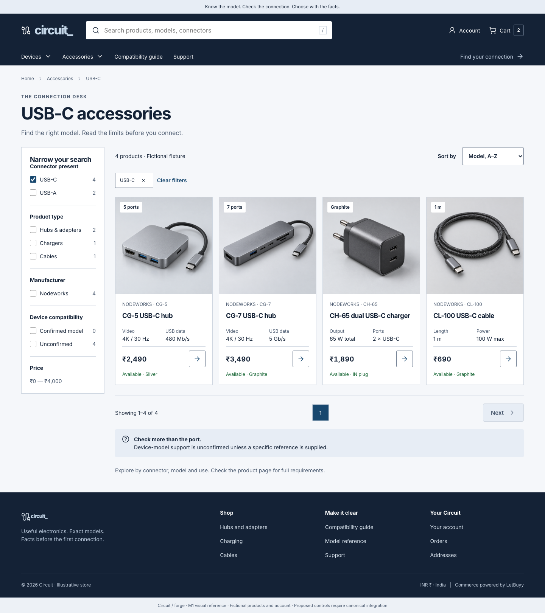
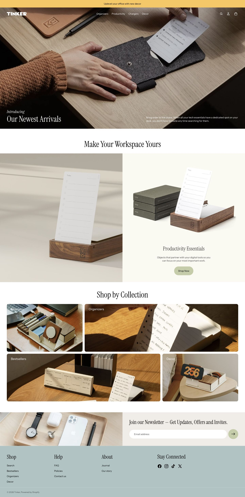
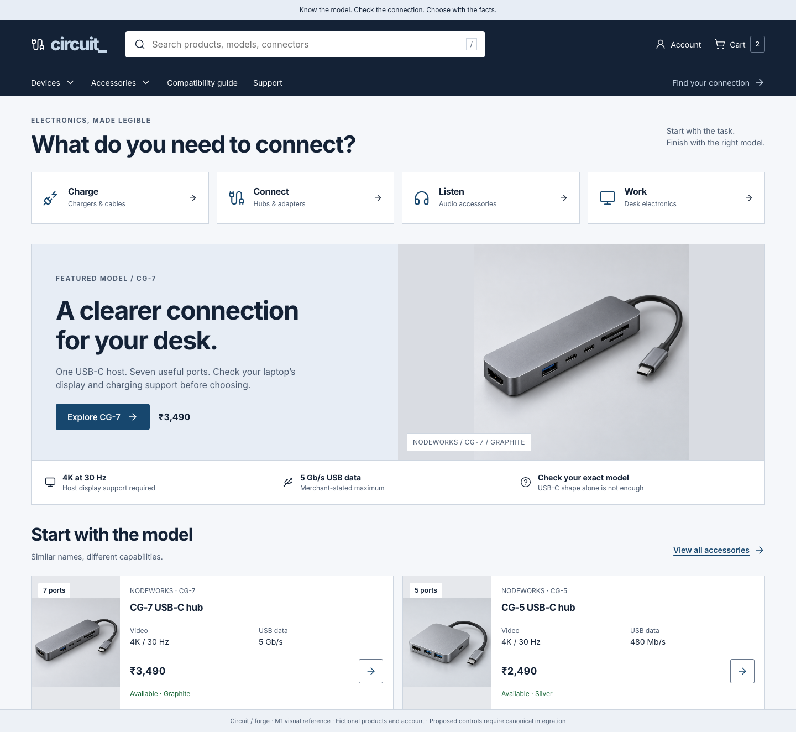

← Circuit storybook
Retain the convention.
Change the shopping task.
Research captured 22 October 2026. Current primary pages were also inspected through the web tool. These are expert observations and design hypotheses, not usability or conversion results. Saved screenshots retain their actual public demo states; no remote pages were modified.
Both sides use native desktop screenshots from 1440 × 1000 CSS-pixel viewports, DPR 1. The images below intentionally show only the top 500 display pixels for side-by-side review. Links open the full original captures. Public demo cart mutation, payment, complete keyboard behavior and all loading states were not tested.
01 · Trade: dense product discovery
Shopify Trade · collection
Public source · 22 Oct 2026 · 1440 × 1000 · all-products collection, no purchase

Saved dossier: Trade. Observed general merchandise grid, filters and sort. Quantity/volume features are not evidence of LetBuyy B2B capability.
Circuit · USB-C retrieval
Scene 03 · M1 design v1 · 1440 × 1000 · USB-C fixture, four results

Technical cards carry manufacturer/model, connector context, units and price. Mobile changes to compact model rows.
| User problem | Nearly identical accessory names conceal materially different data and power capabilities. |
|---|
| Convention retained | Persistent facets, clear result context, sort and pagination beside a regular merchandise grid. |
|---|
| Original difference | Search/category lead the experience; cards identify the exact model and two typed specifications before click. No wholesale account gate, quantity tiers or B2B engine. |
|---|
| Required contract | C: typed electronics facts, allowlisted facets, stable pagination and unit normalization. A: canonical title, price, media and variant identity. Query-backed facets must work before public controls appear. |
|---|
| Evidence limit | Saved public screenshots are visual evidence. Current web extraction confirmed the category/filter vocabulary; it did not create a new screenshot or complete the filter combination space. |
|---|
02 · Tinker: discover by task
Shopify Tinker · homepage
Public source · 22 Oct 2026 · 1440 × 1000 · opening homepage

Saved dossier: Tinker. Workspace hero and task categories including chargers. A desk setting does not establish technical compatibility.
Circuit · task and model opening
Scene 01 · M1 design v1 · 1440 × 1000 · category/search before featured model

Charge / Connect / Listen / Work precede the compact product feature. Technical limits and requirements accompany imagery.
| User problem | A buyer knows the connection task but may not know which accessory model meets it. |
|---|
| Convention retained | Task categories give a plain-language entry into a product collection. Contained product imagery preserves physical shape. |
|---|
| Original difference | Persistent model search and category shortcuts appear before the campaign. The featured hub immediately names video/data limits and host requirements. It does not imply any USB-C host is compatible. |
|---|
| Required contract | A/B: canonical category navigation and resource bindings. C: model/connector facts. D: merchant responsibility for specific compatibility references. No app marketplace or separate search runtime. |
|---|
| Evidence limit | Tinker is a workspace-object reference, not proof of an electronics-specific architecture. Its pictured styling, photography and copy are not reused by Circuit. |
|---|
Original neutral structures
Brand names, accent colors and product imagery are suppressed in these Circuit source renders. The task hierarchy, facet rail, technical cards, model selection and specification table remain.
Open original Circuit ↔ book-retrieval structural comparison
Comparator is an original abstract synthesis from the portfolio blueprint, not a screenshot of another agent’s unfinished theme. Its purpose is to make the electronics-versus-books distinction reviewable.